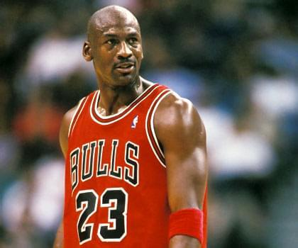
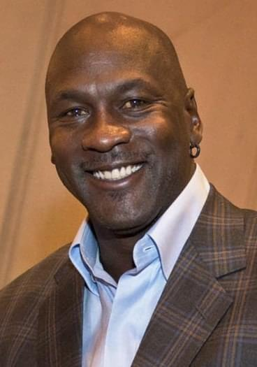
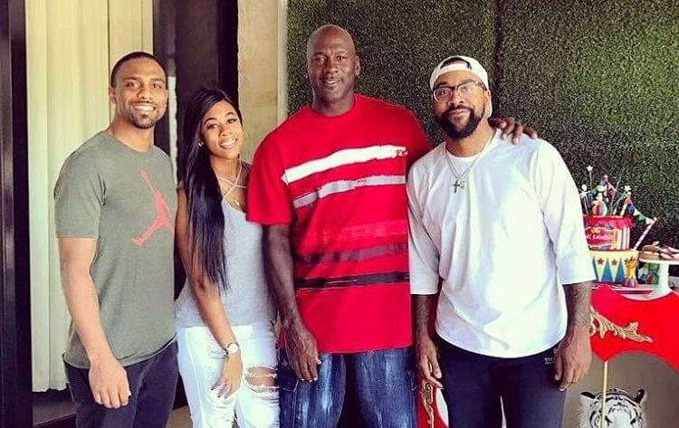

(Michael Jeffrey Jordan; Nueva York, 1963) Jugador de baloncesto norteamericano
considerado el mejor de la historia de este deporte. Ciertamente, desde que a finales
del siglo XIX un profesor de gimnasia estadounidense llamado
James Naismith
inventó el baloncesto hasta la década de 1980, nunca se vio un prodigio comparable al de
este legendario baloncestista.
Con sus 1,98 metros de altura, Michael Jordan fue un tenaz defensor, un excelente anotador
y un pasador rápido e imaginativo; pero mucho más llamativa era aún su extraordinaria
habilidad para saltar y las acrobáticas maniobras que utilizaba para esquivar la defensa
rival y llegar a la canasta. Parecía capaz de permanecer por unos instantes suspendido en
el aire; tal facultad o «don del cielo» -nunca mejor dicho- le valió el sobrenombre de Air
Jordan.

Actualidad
Michael Jeffrey Jordan (Nueva York; 17 de febrero de 1963) es un exjugador de baloncesto estadounidense.
En la actualidad es propietario del equipo de la NBA los Charlotte Hornets. Es considerado por la mayoría
de aficionados y especialistas como el mejor jugador de baloncesto de todos los tiempos. Se retiró definitivamente
en 2003 en los Washington Wizards, tras haberlo hecho en dos ocasiones anteriores, en 1993 y 1999, después de haber
jugado 13 temporadas en los Chicago Bulls.
Ganó seis anillos con Chicago Bulls, promediando 30,1 puntos por partido en toda su carrera deportiva, el mayor
promedio en la historia de la liga. También ganó 10 títulos de máximo anotador, 5 MVP de la temporada, 6 MVP de las
Finales; fue nombrado en el mejor quinteto de la NBA en diez ocasiones, en el defensivo nueve veces, líder en robos de
balón durante tres años y un premio al mejor defensor de la temporada.

Familia
Jordan es el cuarto de cinco hijos. Tiene dos hermanos mayores, Larry y James, y dos hermanas, una mayor (Delores) y
otra pequeña (Roslyn). Su hermano mayor James fue sargento mayor de la 35ta Signal Brigade del XXVII Cuerpo
Aerotransportado del Ejército de los Estados Unidos.En septiembre de 1989 se casó con Juanita Vanoy, con quien tuvo dos
hijos, Jeffrey Michael y Marcus James, y una hija, Jasmine. Michael y Juanita informaron el 4 de enero de 2002 de su
divorcio debido a diferencias insostenibles, aunque posteriormente se reconciliaron.
El 21 de julio de 2006, un juzgado de Cook County, Illinois, determinó que Jordan no debía pagar a Karla Knafel, una
antigua amante, 5 millones de dólares.69 Knafel demandó que esa era la cantidad acordada con Jordan para permanecer
callada y no presentar una prueba de paternidad después de que Knafel quedara embarazada en 1991. Una prueba de ADN
demostró que Jordan no era el padre del niño. El abogado de Knafel, Michael Hannafan, dijo que su cliente apelaría hasta
la última instancia.
Jordan residió en Highland Park, Illinois, y sus dos hijos varones asistieron a Loyola Academy, un instituto privado
católico de Wilmette, Illinois, donde además empezaron a despuntar jugando a baloncesto.Finalmente, el 29 de diciembre de
2006 presentaron su divorcio de manera "mutua y cordial".Jeffrey, su hijo mayor, jugó al baloncesto en la Universidad de
Illinois, mientras que Marcus lo hizo en la Universidad de Florida Central. Por su parte Jasmine estudió administración
deportiva en la Universidad de Syracuse, y se hizo representante de campo de la marca Nike Jordan.
En agosto de 2013, Jordan de 50 años, se casa con Yvette Prieto de 34 en Palm Beach (Florida) tras un largo noviazgo.
En febrero de 2014 darían a luz a las gemelas Victoria e Ysabel.72 En ese momento, los otros tres hijos de Michael tenían
25, 22 y 21 respectivamente.
